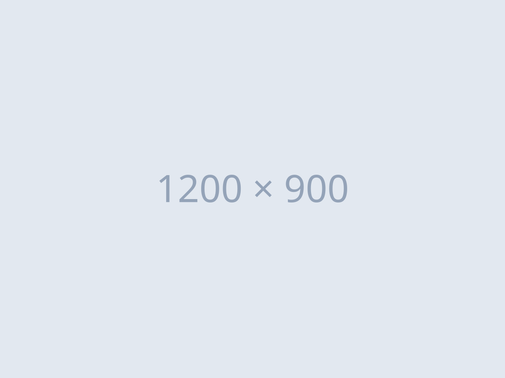

How to Quit a Job You're Good At
Being good at something is the strongest handcuff there is. Here's how to loosen it slowly: test the new thing first, build a runway, and leave well.
 Isla BennettCareer and life-transition coach
Isla BennettCareer and life-transition coach
Short, practical posts on changing careers, burnout, confidence and going back to work. A new one every Monday.

Written by Isla
Five minutes, one idea you can use
Being good at something is the strongest handcuff there is. Here's how to loosen it slowly: test the new thing first, build a runway, and leave well.
Isla BennettCareer and life-transition coach
One honest idea for your week, every Sunday morning. Read by 18,000 people mid-change.
